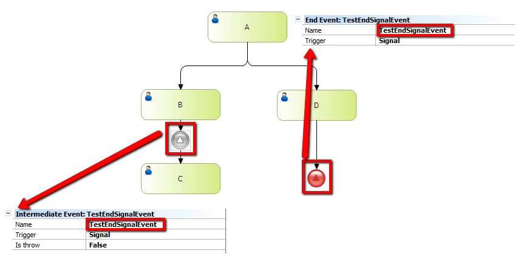

It indicates that the end of a process path results in the broadcast of a signal. When a token reaches this event, it triggers the broadcast before consuming the token. SymbolExample When executing A, B and D are created. Then, if you complete B, the process waits until it receives a signal called TestEndSignalEvent. So, completing the D task, the C will be created because the signal was thrown and the intermediate signal catch it. ScopeObjects: Business Process Diagram See Also
|
| Backlinks | ||
| BPD End Events | Error End Event in BPD | Toc:GeneXus BPM Suite |
| None End Event in BPD | Terminate End Event in BPD |